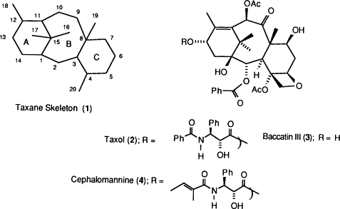
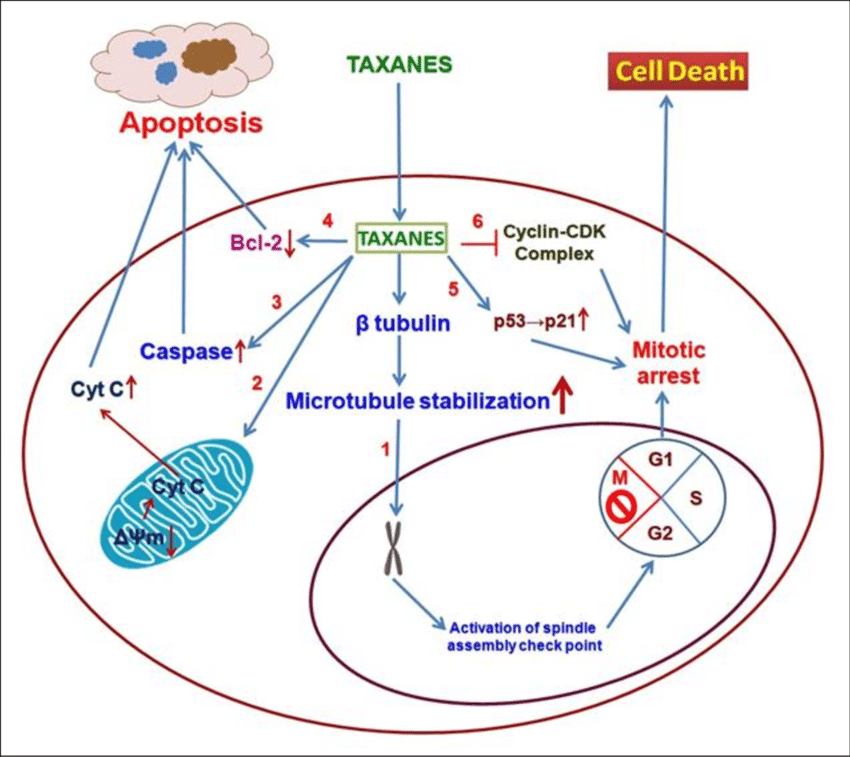

A type of drug that blocks cell growth by stopping mitosis (cell division). Taxanes interfere
with microtubules (cellular structures that help move chromosomes during mitosis). They are used to treat
cancer. A taxane is a type of mitotic inhibitor and a type of antimicrotubule agent.
- Origin
Taxus baccata - European yew
Taxus brevifolia - the Pacific yew
- Structure-Activity Relationship (SAR)

- Mechanism Of Action
The principal mechanism of action of the taxane class of drugs is the disruption of
microtubule function. Microtubules are essential to cell division, and taxanes stabilize GDP-bound tubulin
in the microtubule, thereby inhibiting the process of cell division as depolymerization is prevented. Thus,
in essence, taxanes are mitotic inhibitors. In contrast to the taxanes, the vinca alkaloids prevent mitotic
spindle formation through inhibition of tubulin polymerization. Both taxanes and vinca alkaloids are,
therefore, named spindle poisons or mitosis poisons, but they act in different ways. Taxanes are also
thought to be radiosensitizing.

- Cell Line
aPTX:
breast cancer cells (MCF-7), lung adenocarcinoma (A549), cervical carcinoma (HeLa), grade III astrocytoma (U373), colon adenocarcinoma (HT-29), adenocarcinoma (OVG-1), pancreatic adenocarcinomas (PC-Sh)
DTX:
human lung cancer (A549)